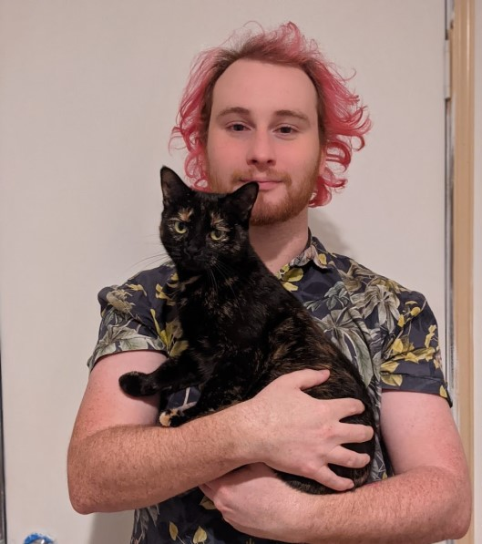
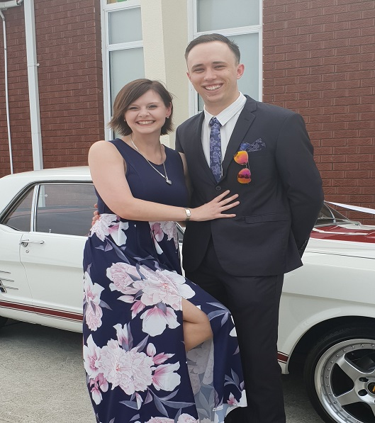
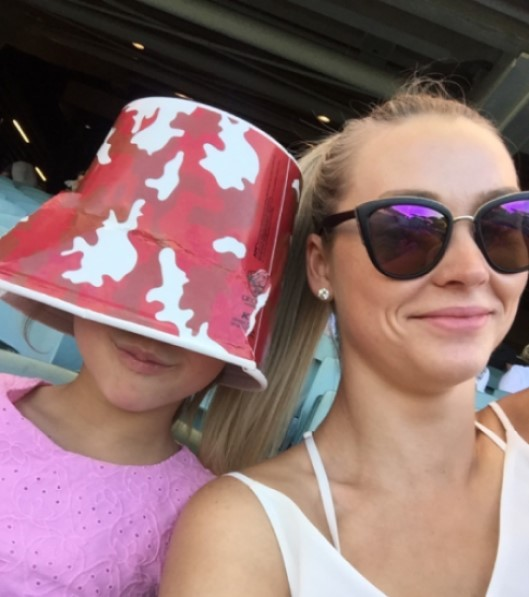

Andrew B
My professional Background is in news media, currently working for Nine News in its regional studio department editing video.
I have come to the realisation that I no longer wish to work in such an industry and such want to pursue a larger interest in Information Technology.

Christopher D
I am a 28-year-old RMIT student that works full time as a customer service representative and technician at a major IT retailer. I have a keen interest in learning and understanding how IT products work and function together and how the technology can benefit individuals, groups and cultures.
Matt F
I have a background in Graphic Design and Photography with a Diploma of Graphic Design and a Graduate Diploma of Creative Industries. I have recently re-evaluated my career aspirations and direction which has led me to peruse my interest in IT and commence studying Information Technology at RMIT.

Natalie J
I have a background in legal and accounting administration, and earned my Diploma of Business Administration from Swinburne in 2018.
In mid-2020, I reassessed my career path and decided to study IT. I want to grow my IT skills, and be a representative for women in STEM.
Thomas H
My name is Thomas Harlow, I'm 36 years old and I work full time at Direct Mail Ontime and study part time with RMIT in Introduction to I.T.
I've wanted to go to University for many years now to learn I.T. but it wasn't until the current world crisis that pushed me to finally start learning since my current knowledge is fairly limited when it comes to I.T.